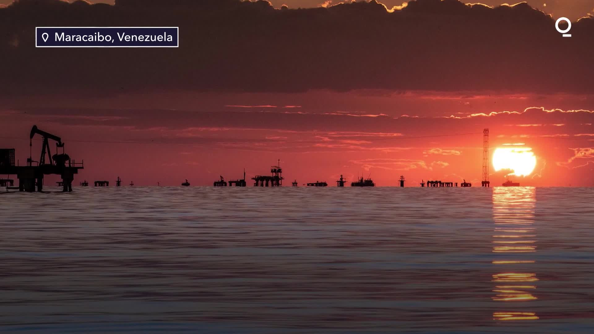

HISTORIA DEL LAGO
El lago de Maracaibo es un lago de gran importancia histórica y geográfica ubicado en el noroeste de Venezuela. Se trata del lago más grande de América del Sur y uno de los más antiguos del mundo, con una superficie de aproximadamente 13,210 km². La historia del lago de Maracaibo se remonta a muchos siglos atrás, cuando las tribus indígenas habitaban la región. Estas tribus veían al lago como una fuente de alimento, transporte y agua.
El lago de Maracaibo tiene una antigüedad de entre 20 y 36 millones de años, lo que lo convierte en el segundo lago más antiguo de la Tierra. Aunque se conecta al mar de manera similar a una albufera, su historia geológica y su profundidad lo diferencian de las verdaderas albuferas. El lago ha experimentado problemas ambientales debido a la contaminación causada por desechos y aguas residuales de las ciudades costeras, así como por la actividad industrial en la zona. Se ha propuesto implementar un plan de acción para el manejo integral de la cuenca del lago de Maracaibo para fortalecer su capacidad de autorregulación
Eventos históricos del Lago de Maracaibo
Descubrimiento del Lago de Maracaibo: Las primeras crónicas que se tienen del lago datan del 24 de agosto de 1499, cuando Alonso de Ojeda, en su primer viaje, recorrió la costa desde Paria hasta el Cabo de La Vela, cruzando frente a la barra de Maracaibo

La Batalla Naval del Lago de Maracaibo, que tuvo lugar el 24 de julio de 1823, fue un enfrentamiento naval entre la escuadra de la República de Colombia liderada por el almirante José Prudencio Padilla y la escuadra de la Armada del Reino de España dirigida por el capitán de navío Ángel Laborde y Navarro. Esta batalla fue decisiva para la independencia de Venezuela y aseguró la libertad del Zulia, último bastión dominado por el yugo español.
El Lago de Maracaibo ha sido una importante región petrolera desde principios del siglo XX. Durante más de 80 años, se ha extraído petróleo en la zona, lo que ha tenido un impacto significativo en la economía y el medio ambiente de la región.